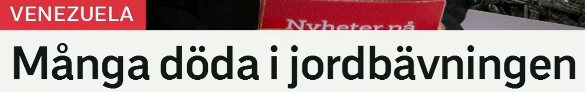

Många döda i jordbävningen
那场地震造成多人死亡 / 许多人在这场地震中遇难。
1. jordbävningen
- en jordbävning：一场地震，不定形式
- jordbävningen：这场 / 那场地震，定形式
- jordbävningar：多场地震
- jordbävningarna：这些 / 那些地震
2. många döda
- många döda：许多死者，简短标题用法
- många har dött：许多人已经死亡
- många omkomna：许多遇难者，正式
- dödssiffran：死亡人数
Dödssiffran efter jordbävningen har stigit. 地震后的死亡人数已经上升。
Räddningspersonal söker efter överlevande. 救援人员正在搜寻幸存者。
Många byggnader förstördes i skalvet. 许多建筑在地震中被毁。
为什么今天多了一个 -en？
瑞典语通常把定冠词接在名词后面。新闻从“首次报道”进入“后续报道”时，这个变化尤其常见。
首次引入：不定形式
En jordbävning har inträffat i Venezuela.
委内瑞拉发生了一场地震。
读者第一次接触该事件，因此用 en jordbävning。
继续回指：定形式
Jordbävningen krävde många liv.
这场地震夺去了许多生命。
双方都知道是哪一场，所以用 jordbävningen。
把“地震”扩展成一个新闻词场
| 报道阶段 | 瑞典语词汇 | 常用表达 |
|---|---|---|
| 发生 | inträffa, skaka, drabba | En jordbävning inträffade. / Området drabbades av ett skalv. |
| 后果 | skadad, saknad, omkommen | flera skadade, söka efter saknade, antalet omkomna |
| 破坏 | förstöra, rasa, skada | hus rasade, vägar förstördes, skadad infrastruktur |
| 救援 | räddningsarbete, överlevande, nödhjälp | rädda överlevande, skicka nödhjälp, fortsätta sökandet |
Skalvet fick flera hus att rasa. 地震导致数栋房屋倒塌。
Internationell nödhjälp är på väg. 国际紧急援助正在赶来。
Myndigheterna befarar att dödssiffran stiger. 当局担心死亡人数还会上升。
主动复习
练习 1 · 变为定形式
en jordbävning, en olycka, ett skalv, en storm 分别怎样变成“这场……”？
练习 2 · 选择词语
“失踪者”用 saknade，“幸存者”用 överlevande。各写一个救援场景句子。
练习 3 · 改写标题
把 Många döda i jordbävningen 改写成带完整谓语的句子：Många har dött ...
练习 4 · 新闻链条
用 inträffa → rasa → räddningsarbete 三个词讲述一条三句短新闻。